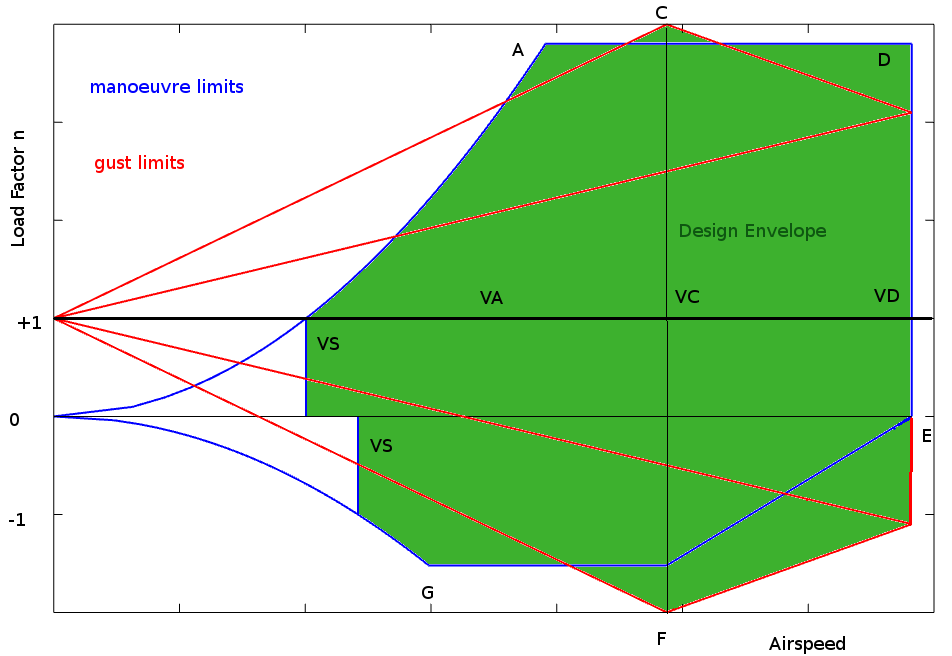

FLIGHT ENVELOPE>
The operation of any aircraft is expected to meet a range of performance minimum or maximum requirements. For different categories of aircraft the minimum requirements are determined by the aircraft's flight envelope. Aircraft must be able to meet these performance and design specifications before they can be certificated as being air-worthy.
A typical flight envelope is a graph of speed versus load factor. Speeds are determined by the aircraft's handling performance and desired cruise operation. Load factors are set as the limiting design requirements for the vehicle. The aircraft and all of its components must be designed to operate safely at any point within this envelope.

Determination of the extremities of this envelope are based on aerodynamic performance and structural integrity requirements. The requirements for certification are documented under the Federal Aviation Administration Airworthiness Regulations. In this document FAR 23 (CFR Section 23) normal category requirements are referenced. See full FAR documentation for 23-utility and aerobatic category aircraft , FAR 25 for transport categories, FAR 27 and 29 for helicopters and other rotorcraft. Information given below is the minimum requirements for normal category light aircraft.
Speed Definition.
$VC$ – Design cruise speed.
– chosen by the designer and normally based on operational requirements and engine power availability.
– $VC$ must not be less than $33√{W/S}$ knots where $W/S$ is wing loading (lb/ft2)
$VD$ – limiting dive speed.
– determined by the strength of components under maximum dynamic loading.
– $VD$ must not be less than $1.4 × VC_{min}$
$VS$ – stall speed $VS=√{{\text"MTOW"}/{1/2ρC_{L(max)}S}}$ ft/s
$VA$ – stall speed under peak manoeuvre load $VA=√{{n\text"MTOW"}/{1/2ρC_{L(max)}S}}$ ft/s
Load Factor Definitions
$ n = 1$ – level flight.
$(+)n_{max}$ – maximum positive manoeuvre load factor
– must be no less than $2.1+{24,000}/{MTOW+10,000}$
– but does not need to be greater than $3.8$
$(-)n_{max}$ – maximum negative manoeuvre load factor
– magnitude must not be less than $0.4 × n_{max}$
$n_g$ – maximum load factor due to cruise gust or dive gust points
(C) and (F)
$ n_g=1±{K_gU_gVa}/{498 W/S}$
where gust factor $K_g={0.88μ_g}/{5.3+μ_g}$ and $ μ_g={2 W/S}/{ρcag}$
$ρ$ – air density in slug/ft3
$c$ – wing chord in ft
$a$ – wing lift curve slope in radian-1
$g$ – gravitational constant 32.2 ft/s2
$U_g$ – gust velocity 50ft/s for cruise, 25ft/s for dive.
$V$ – Aircraft equivalent airspeed in knots.
Gusts must be evaluated for both positive and negative values at both cruise speed (C) and dive speed (D)
Note : As these design parameters are based on US regulations all calculations must be done using Imperial units not Metric units. Conversions should be done afterward.
Reference
Federal Aviation
Regulations.
FAA Dynamic Regulatory System